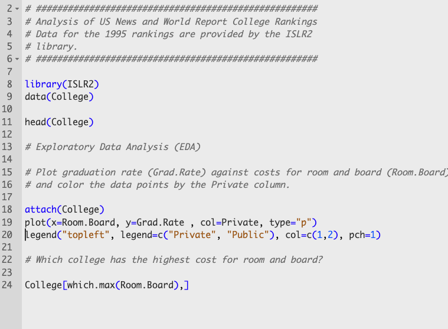

{kind=link}
(.packages())5 First Steps in R
Quotes
Learning to write programs stretches your mind, and helps you think better, creates
a way of thinking about things that I think is helpful in all domains.
The function of good software is to make the complex appear to be simple.
My former manager: “If you write code, you write bugs.”
Me: “I write a lot of code.”
5.1 Getting Started with R
TL;DR What you Need
To work with R in this course, you need to be able to run R code, mix it with text in a notebook-style environment, and turn program and output into pdf and html files. To accomplish this you will need
You can skip R and RStudio installs if you do the work in a Posit Cloud environment. Posit Cloud accaounts are available for free here.
To get started with R as a statistical programming language you need access to R itself and a development environment from which to submit R code.
Download R for your operating system from the CRAN site. CRAN is the “Comprehensive R Archive Network” and also serves as the package management system to add new packages to your installation.
If you use VS Code as a development environment, add the “R Extension for Visual Studio” to your environment. We are focusing on RStudio as a development environment here.
Posit Cloud
In today’s cloud world, you can get both through Posit Cloud. Posit is the company behind RStudio, Quarto, and other cool tools. Their cloud offering gives you access to an RStudio instance in the cloud. You can sign up for a free account here. The only drawback of the free account is its limitations in terms of RAM, CPU, execution time, etc. For the work you will be doing in this course, and probably many other courses, you will not exceed the limitations of the free account.
Once you have created an account, the work space is organized the same way as an RStudio session on your desktop.
R and RStudio
RStudio is an integrated development environment (IDE) for R, but supports other languages as well. For example, using Quarto in RStudio, you can mix R, Python, and code from other languages in the same document.
Download Rstudio Desktop here.
The RStudio IDE is organized in panes, each pane can have multiple tabs (Figure 5.1). The important panes are
Source. The files you edit. These can be R files (.R), R Markdown (.Rmd), Quarto (.qmd), or any other text files.
Console. Here you can enter
Rcommands directly at the command prompt “>”. This pane also has aTerminaltab for an OS terminal and aBackground Jobstab. The latter is important when you “knit” documents into pdf or html format. Knitting a file in RStudio is the process of converting a .Rmd file into a pdf, html, or Word document.Environment. Displays information about the objects created in the
Rsession. You can click on an object for a more detailed look at it in theViewer.Help. This pane contains many useful tabs, such as a File browser, package information, access to the documentation and help system. Plots generated from the
Consoleor from anRscript are displayed in thePlotstab of this pane.
Installing Packages
Capabilities of R come from functions in packages. The basic R installation comes with basic packages that are loaded automatically into an R session. The stats package, for example, provides many basic statistical functions. To see the packages loaded in your workspace, enter this command at the console prompt:
To add capabilities beyond the basic packages to an R installation, you need to go through a two-step process.
- Install the package
- Load the package in your
Rsession with thelibrary()command.
Installing the package is done once, this step adds the package to your system. Loading the library associated with the package is done in every R session that needs to use the functionality of the package. Once you get going with R you will install many packages to tailor R to your needs. Packages that are made available through repositories of CRAN, the Comprehensive R Archive Network, are known as standard packages.
The following command installs three CRAN packages, ISLR2, rpart and rpart.plot, in one fell swoop on your system. Copy the command to the console prompt in RStudio and hit
install.packages(c("rpart","rpart.plot","ISLR2"))The ISLR2 library provides data sets that are used in James et al. (2021). rpart is a popular library for training decision trees on data and rpart.plot produces nice-looking visualizations of decision trees.
.R and .Rmd Files
You save R code in two file types. Files with .R extension are called R scripts, they contain pure code and comments. Files with .Rmd extension are in R Markdown notebook format; they combine R code with narrative text and are the basis for high-quality professional documents. Code in R Markdown files is contained in code chunks. Figure 5.2 shows a level-2 header, narrative text, and a code chunk in a R Markdown document. The code chunk begins with the ```{r} and ends with the ``` character sequence. {r} after the opening ticks indicates that the code that follows is in the R programming language.
To execute the code in a code chunk there are several options:
- Place the cursor somewhere in the chunk and hit
<Cmd> <Shift> <Return> - Click on the green arrow at the right edge of the chunk
- Place the cursor on a line of code inside the chunk and hit
<Cmd> <Return>. - Highlight several lines of code and hit
<Cmd> <Return>
The first two options execute all lines of code inside the chunk–top to bottom. The third option executes only the line the cursor was placed on and advances to the next line of code. One technique to run an entire chunk line by line is to place the cursor at the beginning of the chunk and repeatedly hit <Cmd> <Return> until you reach the end of the chunk.
Figure 5.3 shows the content of an R script. Lines that start with a # character are comments. Executing the code in an R script is akin to options 3 and 4 in the list above. When you place the cursor on a line of code and hit <Cmd> <Return> the line is executed and the cursor advances to the next line. You can also highlight multiple lines and execute them together by hitting <Cmd> <Return>. That is necessary if a function requires to be run together with another function. The legend statement in Figure 5.3 cannot be run by itself, it needs to be associated with a graphic. To obtain the desired result, a plot with a legend, the plot and legend statement need to be executed together.

Instead of hitting the keys to run code you can also click on the “Run” icon near the top of the screen. The available run options are different for R scripts and R Markdown files.
5.2 College Data
To get familiar with basic steps in working with data in R we use the College data set that is part of the ISLR2 package. The data set contains information from the 1995 US News and World Report college rankings on 777 colleges in the U.S. The data frame contains the following variables:
| Variable Name | Description |
|---|---|
Private |
A factor with levels No and Yes indicating private or public university |
Apps |
Number of applications received |
Accept |
Number of applications accepted |
Enroll |
Number of new students enrolled |
Top10perc |
Pct. new students from top 10% of H.S. class |
Top25perc |
Pct. new students from top 25% of H.S. class |
F.Undergrad |
Number of full time undergraduates |
P.Undergrad |
Number of part time undergraduates |
Outstate |
Out-of-state tuition |
Room.Board |
Room and board costs |
Books |
Estimated book costs |
Personal |
Estimated personal spending |
PhD |
Pct. of faculty with Ph.D.’s |
Terminal |
Pct. of faculty with terminal degree |
S.F.Ratio |
Student/faculty ratio |
perc.alumni |
Pct. alumni who donate |
Expend |
Instructional expenditure per student |
Grad.Rate |
Graduation rate |
Exploratory Data Analysis
Exploratory Data Analysis (EDA) is the “first date with the data.” EDA consists of computing summary statistics of the variables, visualizing their distribution and exploring relationships between the variables. The goal of EDA is to develop understanding of the data we are dealing with and to suggest interesting questions and subsequent analyses.
EDA can also reveal issues with data quality, for example, data entry errors, outliers, or unobserved (missing) values.
Exercise: EDA for College Data
Use the script Colleges.R and answer the following questions:
Compute simple summary statistics for all variables in the data frame
Which college has the highest cost for room and board?
Which college has the highest graduation rate?
Which colleges have graduation rates above 95%?
Are there public universities with a graduation rate above 95%?
Create a scatterplot of graduation rate versus costs for room and board with data points colored by public/private state of the college.
Create a scatterplot of full time undergraduate enrollment versus out-of-state tuition. Color the data points according to the public/private state of the college.
Create histograms of the out-of-state tuition and compare private and public colleges. Repeat for the graduation rate.
What other questions do you suggest asking?
Did the exploratory data analysis so far trigger new questions about the data you did not have before?
5.3 R Resources
R for Data Science, 2nd ed. (Wickham, Cetinkaya-Rundel, and Grolemund 2023).
Modern Data Science with R, 2nd ed. (Baumer, Kaplan, and Horton 2021).
R Graphics Cookbook: Practical Recipes for Visualizing Data, 2nd ed. (Chang 2018)
R Markdown: The Definite Guide (Xie, Allaire, and Grolemund 2019)
Mastering Software Development in R (Peng, Kross, and Anderson 2020)